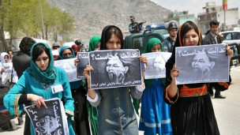

|
|

یک پدر دو دخترش را در جنوب افغانستان کشته است
دو شنبه2 مرداد 1391
بی بی سی: پلیس ولایت هلمند، در جنوب افغانستان گفته است که دو دختر به اثر خشونتهای خانوادگی در منطقه نادعلی این ولایت کشته شدهاند.
عمر جان حقمل، فرمانده پلیس نادعلی گفتهاست که این دو دختر چهار روز پیش با یک مترجم نیروهای خارجی "فرار" کرده بودند.
به گفته مقامها، این دو دختر پس از آن که یکشنبه شب، (اول اسد/مرداد) به خانه بازگشتند از سوی پدر خود به قتل رسیدند.
تا حال مشخص نیست که مترجم مورد نظر از ساکنان همان منطقه است یا از منطقهای دیگر.
فرید احمد فرهنگ، سخنگوی پلیس ولایت هلمند گفته که پدر این دختران بازداشت شده، اما مترجم از منطقه فرار کرده است.
فعالان حقوق زن در ولایت هلمند میگویند دختران در موارد زیادی به دلیل خشونتهای خانوادگی مجبور به فرار از خانه میشوند.
خبر قتل دختران هلمندی در حالی منتشر میشود که اخیرا رسانههای محلی از ولایت مرکزی بامیان گزارش داده اند که یک دختر برای تن ندادن به ازدواج اجباری، دست به خودکشی زده است.
براساس گزارشها، این دختر در روزی که قرار بوده مراسم نامزادیاش برگزار شود، با خوردن سم، خودش را کشت.
خشونت با زنان خشم و اعتراضهای فعالان مدنی و مدافعان حقوق زن را برانگیخته، اما اینگونه خشونت در جامعه مردسالار افغانستان همچنان ادامه دارد.